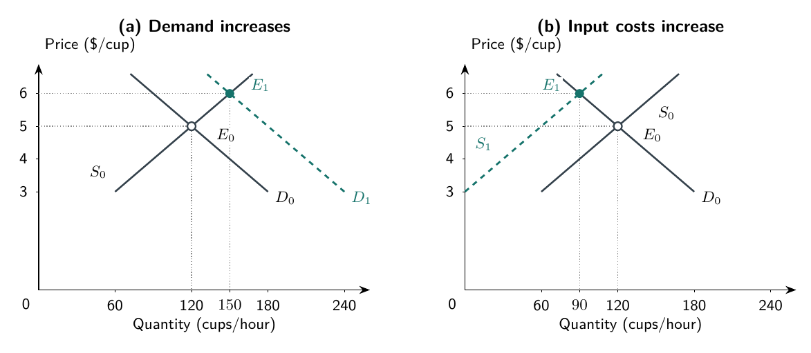

Start with a decision
Imagine a small café near campus. Its owner arranges supplies, hires workers, and decides when to open. Workers prepare drinks, take payments, and clean equipment. Customers decide whether to buy here, go elsewhere, or make something themselves. Suppliers decide what ingredients they can deliver and on what terms.
None of these people needs to know everything about the business. Each needs to make choices with the information and alternatives available. The owner cannot order customers to buy, assume workers will accept any schedule, or use the same hour twice.
Suppose the café is about to close when another customer arrives. Should it accept one more order? “More sales are good” is not enough to answer. We need to know what accepting the order adds and what it requires the café to give up.
That is our starting point. Economic reasoning compares feasible alternatives, counts the relevant benefits and costs, and asks how other people may respond. It does not require everyone to be selfish, perfectly informed, or skilled at calculation. It does require us to take their choices seriously. The café and all numbers below are fictional teaching examples.
What does the choice require us to give up?
The café has limited time, counter space, equipment, and money. Using a resource one way means giving up another possible use. The value of the best alternative forgone is its opportunity cost.
Consider an hour of the owner’s time. Working behind the counter might avoid hiring someone else. But the hour might instead be used to arrange tomorrow’s deliveries or take time off. The owner’s time is not free merely because no wage payment appears in the accounts. We should count the value of the best feasible alternative, not add up every activity the owner could possibly have done.
The comparison must match the decision. Deciding whether to open a café requires considering an entire operation. Deciding whether to accept one extra order requires considering the changes caused by that order. Marginal reasoning means examining an additional unit or action: one more cup, another hour open, or one additional worker. “Marginal” does not mean unimportant.
For the extra order before closing, suppose the posted price is $5. Accepting it requires overtime, bringing the incremental opportunity cost—including the extra ingredients and relevant time—to $6. Assume there are no additional future benefits or other consequences left out of this comparison.
The order adds $5 of revenue and $6 of cost. Its incremental return is $5 − $6 = −$1. Accepting it makes the café $1 worse off than declining it. Profitable orders earlier in the day do not change that difference. This calculation answers whether to accept this order at this price; it does not establish the café’s best price.
Now suppose the owner remembers spending $60 on a sign advertising late service. The sign is already paid for and cannot be returned, resold, or otherwise recovered. That expense is a sunk cost: it is unchanged by the current choice. Accepting the order cannot recover the $60. It adds another loss of $1.
This does not mean the original sign decision was necessarily foolish. It means the current decision must use current alternatives. If an asset could be sold, using it would sacrifice that sale value; the recoverable amount would be relevant even if the original purchase occurred long ago. The useful question is not simply “When was the money spent?” but “What changes between the alternatives now?”
The decision can also have consequences beyond tonight. If accepting the late order were likely to retain a valuable customer, that additional future benefit would belong in the comparison. We assumed it away to isolate the basic calculation; in practice, we would need evidence about its size and likelihood. Likewise, deciding whether to offer late service every evening could change staffing and other costs that cannot be changed for tonight’s order. Economic reasoning is not a rule to ignore the future. It is a discipline for including consequences that differ between the alternatives, without using past spending or vague hopes to justify any choice we happen to prefer.
Exchange can create gains for both sides
Consider a separate cup sold during regular hours. A customer is willing and able to pay up to $7 for it, compared with doing without or choosing the next-best alternative. The café’s incremental opportunity cost is $3, including the relevant ingredients, time, and forgone uses of its resources. The price is $5.
The customer gains $7 − $5 = $2: the drink is worth more to that customer than the money surrendered. The café gains $5 − $3 = $2: the payment exceeds the opportunity cost of providing the drink. Together, they gain $4.
The $5 payment is money transferred between the participants. It is a cost to the buyer and revenue to the seller, but it is not an additional $5 of resources consumed on top of the café’s $3 cost. Counting it that way would mistake a transfer for an additional resource cost.
Now change only the price to $6. The same customer still buys the same cup, and its resource cost remains $3.
Table F.1. The price divides the gains from this exchange.
| Item | Price of $5 | Price of $6 |
|---|---|---|
| Customer’s willingness to pay | $7 | $7 |
| Café’s incremental opportunity cost | $3 | $3 |
| Customer’s gain | $2 | $1 |
| Café’s gain | $2 | $3 |
| Combined gain | $4 | $4 |
On a small screen, scroll the table sideways to see all columns.
The higher price transfers $1 of the gain from the customer to the café. It does not create another dollar of combined gain. Creating value and capturing a share of it are different questions.
Keep the limits clear. We held the exchange itself fixed and assumed no omitted effects on third parties. A price change that prevents some transactions can change total gains. Willingness to pay also reflects ability to pay; it is not a measure of moral worth or a complete account of human welfare. And the café’s gain on this cup is not its total accounting profit: costs of the wider operation still matter for decisions about that operation.
From one café to a market
So far we have examined one business and individual orders. Now widen the view to a simplified market for comparable takeaway drinks across sellers in the campus area. The quantity will mean cups per hour across that market, not this café’s sales.
For this model, assume many buyers and sellers, a sufficiently comparable product, and no single participant able to materially control the common market price. Hold other relevant conditions fixed. A model is a deliberately simplified account of a situation. Its usefulness depends on whether its assumptions help answer the question at hand; we have not established that every actual café market fits this description.
Demand describes the quantities buyers are willing and able to purchase at different prices. It is not simply how much people like coffee. At a higher price, some purchases become less attractive relative to alternatives. A customer might make a drink at home or skip a second cup. Holding other conditions fixed, the schedule below therefore has lower quantity demanded at higher prices.
Supply describes the quantities sellers are willing and able to offer at different prices. A higher price can make additional production worthwhile: a seller may extend service or use more costly capacity. The schedule below assumes quantity supplied increases with price, holding input costs and other conditions fixed. It is not a count of drinks already sitting on counters.
Table F.2. A hypothetical market schedule.
| Price per cup | Quantity demanded, cups per hour | Quantity supplied, cups per hour |
|---|---|---|
| $3 | 180 | 60 |
| $4 | 150 | 90 |
| $5 | 120 | 120 |
| $6 | 90 | 150 |
On a small screen, scroll the table sideways to see all columns.
Read each row as two sets of plans at the same price. At $4, buyers want 150 cups per hour, while sellers offer 90. These are not two different counts of actual sales. They show that the plans do not fit together at that price.
The difference of 60 cups is excess demand, or a shortage at the stated price. Some willing buyers cannot obtain a cup on those terms. If prices can adjust, sellers have an opportunity to raise them. Moving toward $5 reduces quantity demanded and increases quantity supplied.
At $6, the reverse imbalance appears: sellers offer 150 cups while buyers want 90. This is excess supply. Sellers have reason to lower prices or reduce the amount offered. At $5, both sides plan 120 cups. That price and quantity form the model’s equilibrium: the plans are mutually consistent. Equilibrium does not mean every participant is pleased, or that nobody would prefer a different price.
Reading the graph
Figure F.1 puts the schedules on axes. The horizontal axis measures quantity in cups per hour; the vertical axis measures price in dollars per cup. To locate the baseline equilibrium, start at 120 on the horizontal axis and move up to the $5 level. The point labeled E0 is where the original demand curve, D0, meets the original supply curve, S0.
The downward-sloping line connects the demand schedule; the upward-sloping line connects the supply schedule. Straight lines connect our assumed values and extend slightly above $6 so you can see the curves cross at each new equilibrium. These extensions illustrate the same hypothetical model; they are not additional observations. Dotted guides connect equilibrium points to their prices and quantities; the dashed curve in each panel represents a changed schedule.

Figure F.1. Two separate changes from the same starting point. Stronger demand raises price and quantity; higher input costs raise price but reduce quantity in this model.
Two different reasons for a higher price
Suppose a campus event brings more potential buyers into the area. To make the example precise, add 60 cups per hour to quantity demanded at every price. Leave the original supply schedule unchanged.
At the old $5 price, buyers now want 180 cups, but sellers still offer 120. This shortage puts upward pressure on price. At $6, the original demand of 90 becomes 150 after adding 60. Sellers already offer 150 at that price. The new equilibrium is therefore $6 and 150 cups per hour, shown by E1 in panel (a).
This is an increase in demand, a shift from D0 to D1, because buyers want more at each given price. The higher price then causes a movement along the unchanged supply curve. Supply has not shifted merely because sellers respond by offering more.
Now return to the original $5, 120-cup equilibrium. Forget the campus event. Instead, suppose an ingredient-cost increase makes production less attractive. In this separate example, subtract 60 cups per hour from quantity supplied at every price, leaving original demand unchanged.
At $5, buyers still want 120 cups, but sellers now offer only 60. Again there is a shortage. At $6, original supply of 150 becomes 90 after subtracting 60, matching the 90 cups buyers demand. The new equilibrium is $6 and 90 cups, shown in panel (b).
The cost change shifts supply from S0 to S1. Buyers then move along their unchanged demand curve as the price rises. Their reduced purchases do not mean demand shifted.
Both changes raise the equilibrium price by $1. But stronger demand increases equilibrium quantity, while reduced supply decreases it. Seeing a higher price alone would not tell us which change occurred. Nor should we apply the second change to the first panel’s new equilibrium: each comparison starts from the original conditions.
These results follow from our specified schedules. In an actual market, menus, contracts, staffing, and information can delay responses. The model identifies adjustment pressures and a new point of consistency, not a promise that every price changes immediately.
The owner chooses a price, not the customer’s response
Return to our individual café. Its owner can put a new price on the menu. That does not give the owner control over how many people buy. The market’s 120 cups per hour are not an order guaranteed to this business.
Customers’ alternatives matter. If nearby sellers offer comparable drinks conveniently, a café that raises its price alone may lose customers to them. That differs from a market-wide price increase, which changes the price at multiple sellers. A customer who particularly values this café’s location or service may respond differently from one who regards the shops as interchangeable.
Time matters too. Someone already waiting in line may accept a higher price today. Over several weeks, that person can learn about other shops or arrange to bring a drink from home. More time can open additional ways to respond. Chapter 3 develops elasticity, the size of quantity’s percentage response to a price change; here, the first step is identifying realistic alternatives.
The reasoning also applies when the café is a buyer. Higher ingredient prices may prompt it to seek another supplier or change its recipes, but finding and testing a replacement takes resources. Recruiting workers means offering terms that compare with their other options, including schedules as well as pay. A cost increase does not automatically entitle the café to pass the full amount to customers: their willingness to buy still matters.
People have information—and reasons to act
A price can communicate something useful without telling the owner the whole story. The owner may not know every reason an ingredient became harder to obtain, yet its higher price gives a reason to reconsider how it is used. The broader idea that prices help coordinate people with dispersed knowledge is developed by Hayek. This does not mean prices reveal everything the owner needs to know.
Inside the café, coordination also involves assigning work. The owner might ask one worker to prepare orders while another cleans equipment, rather than negotiating a separate purchase of each task. Coase distinguishes coordination through market exchange from direction inside a firm. Directions still use scarce resources, and workers retain choices about how to carry them out.
Suppose the owner rewards workers only for cups sold. Workers choose how to divide attention among speed, accurate orders, and cleaning. Rushing might raise the count while creating mistakes or leaving equipment poorly maintained. That is a possible response to the rule, not an accusation that workers will necessarily behave that way.
Ask who makes the choice, who receives the reward, and who bears the consequences. The owner wants a successful café, but a worker’s evaluation may recognize only part of the work needed to achieve it. Repairing that mismatch can require different authority, better information, or different rewards—all of which have costs.
Chapter 1 develops these organizational questions, including agency costs. Chapter 2 applies cost reasoning to more complicated decisions; Chapter 3 develops customer response and pricing. The common foundation is the same: compare alternatives, specify what changes, and account for the choices of everyone affected.
Study map
For a business decision, ask: What are the feasible alternatives? What additional benefits and opportunity costs does each create? Which past costs cannot be changed? Are we studying one business or a market? What changed in the model, and what stayed fixed? Finally, who decides, who benefits, and how might others respond?
Practice and discussion
The extra order. Change the closing-time order’s incremental cost from $6 to $4, keeping its price at $5. Should the café accept it under the stated assumptions? Explain what role, if any, the already-paid $60 sign should play.
Create or divide? In the regular-hours exchange, explain what changes when price rises from $5 to $6. Give a reason a price change could affect total gains when we stop holding the number of transactions fixed.
Read the market. At $4 in the baseline schedule, calculate the imbalance and explain the pressure on price. State why quantity demanded and quantity supplied need not be equal before adjustment.
Separate the changes. Compare the campus-event example with the ingredient-cost example. Identify the shifted curve, the unchanged curve, and the new price and quantity in each. Why would observing only a higher price leave the explanation unresolved?
Design a better rule. Suggest one change to the cups-sold evaluation rule. Explain which omitted activity it recognizes and one cost or new problem your change might introduce.
Check your arithmetic
Question 1: $5 − $4 = $1 of incremental gain, so accept under the stated assumptions. The unrecoverable $60 is unchanged by the choice. Question 3: demand of 150 minus supply of 90 gives excess demand of 60 cups per hour at $4.
Source note
The café, numbers, graph, and exercises are original teaching constructions. The linked essays support the brief information and coordination discussions; they are not sources of observed café outcomes.